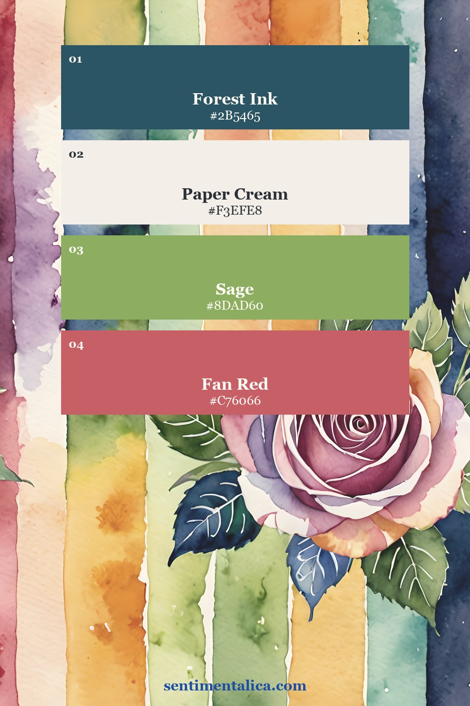
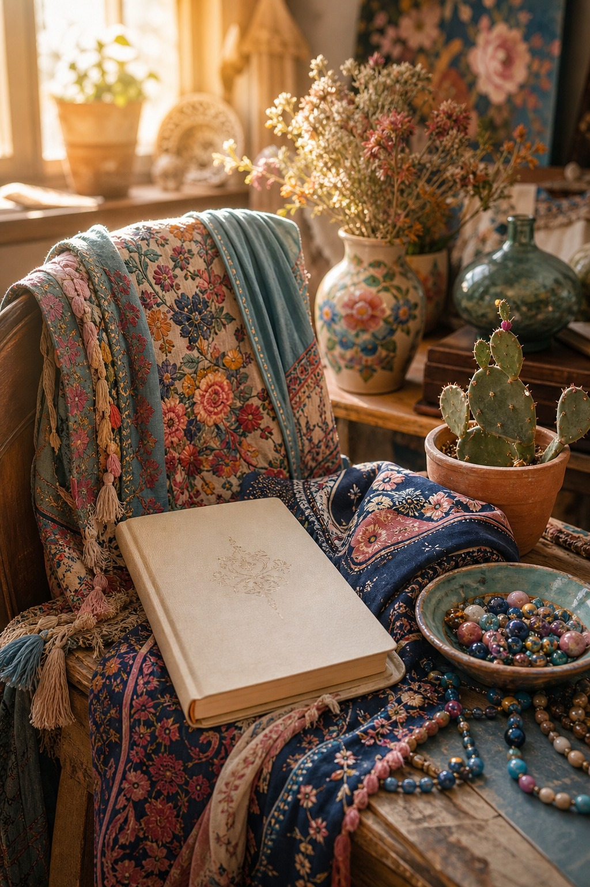
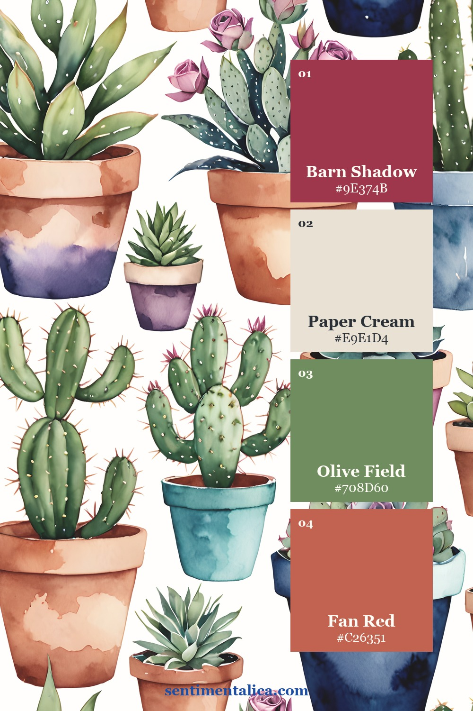
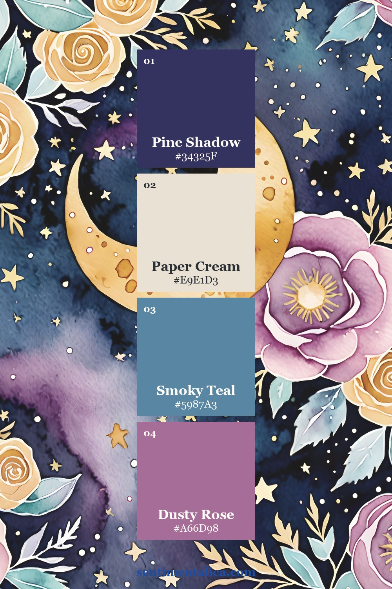
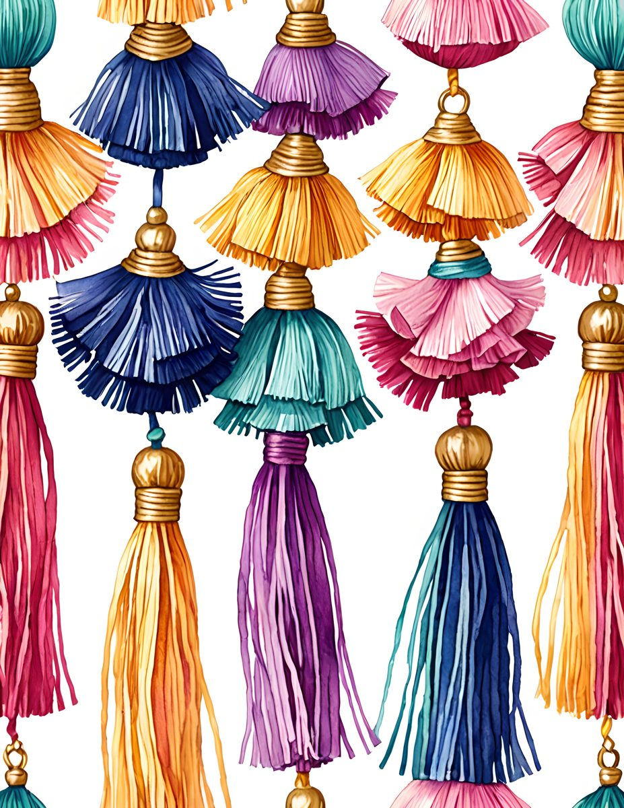
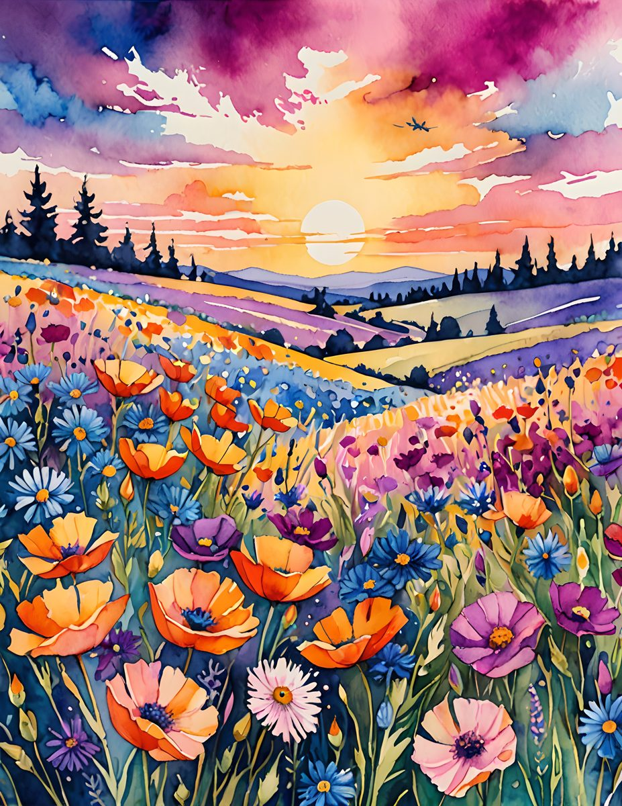

Wild color works best when it has a little discipline. Instead of using every bright scrap at once, choose one deep color to ground the page, one paper neutral, and one accent that feels alive. Then the page can be playful without becoming noisy.

Let the anchor do the quiet work
In a bright kit, the dark blue, teal, or plum is often the secret. It lets the pinks and ochres feel more expensive. Place the anchor in one strong area: a label, a fabric tab, or a corner cluster. Then repeat it once.

Use pattern like a spice
A patterned page can carry the whole spread, but it needs breathing room. Try one bold paper, one plain cream layer, and one small botanical or ribbon detail. If every layer is shouting, remove the second-loudest one.


See the pages up close


If your desk needs a page that feels joyful and a little brave, use the matching printable pages as the base and keep your own scraps on top: one ribbon, one note, one soft label.